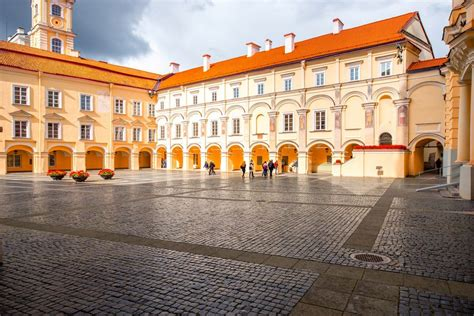
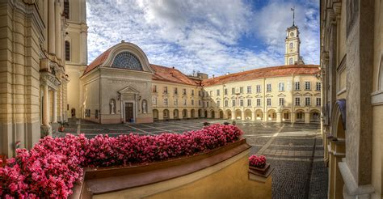

About Vilnius University
Oldest and largest Lithuanian higher education institution. Since its establishment in the 16th century, Vilnius University, as integral part of European science and culture has embodied the concept of a classical university and the unity of studies and research. Vilnius University is an active participant in international scientific and academic activities and boasts many prominent scientists, professors and graduates. Scientific development and the expanding relations with global research centres have contributed to the variety of research and studies at Vilnius University. With the support of social partners, the university educates globally–minded specialists who successfully integrate in the modern European community.
Why Vilnius University?
Vilnius University is a classical university with over 430 years of academic traditions and the widest range of study programmes in Lithuania. The university offers an academic environment focused on excellence in research and teaching. Vilnius University is 1st in Lithuania according to national ranking. It is the most popular and most acknowledged higher education establishment among Lithuanian secondary school graduates. Vilnius University is Lithuania’s leading academic institution, ranked among the top 500 universities worldwide (QS).
Mission
The mission of Vilnius University is to create, accumulate and disseminate knowledge by ensuring continuity of authentic university culture distinguished by the atmosphere where old traditions and new ideas enrich each other. Freedom of thought and diversity of opinions are the main values of the University community. A unity of research and studies is the core principle of the overall activity of the University. The University should distinguish itself by a broad spectrum of fundamental and applied research. It should seek to assume the leading position among other Lithuanian institutions in all research areas that are essential to the very nature of a comprehensive University and set itself the goal of international excellence in the interdisciplinary research. The University should be committed to the mission of opening the doors and providing universal education for the most talented young people from all districts of Lithuania and educating active and responsible specialists, who demonstrate the need to expand their knowledge and improve professionally and who are able to learn throughout their lifetime. The University should seek that the quality of all forms of studies conforms to the modern culture and technologies and pertains to the needs of the state and society.
Vision
To position and distinguish itself in European research and education area by top level research, which should be sustained by University’s research teams of international acclaim and new teams, as well as to ensure annually increasing involvement in European research and educational programmes; to ensure that the balanced development and interaction of research in humanities, social, physical, biomedical and technological sciences remains the most outstanding feature of the University, which essentially differentiates it from other Lithuanian establishments of higher education and research; to initiate and actively implement the projects of value for the economic development of the country, which would encourage effective co-operation of scientific and educational institutions with high technology companies and create favourable conditions and environment for innovations and entrepreneurship; to create a well-functioning quality assurance system which would guarantee effective monitoring of the existing study programmes and development of new programmes and which would encourage the implementation of advanced teaching methods and tools. The system should ensure that generic and specific competencies and skills of University graduates are in consistency with the needs and tendencies in the economy, culture and labour market of the country; to significantly expand non-consecutive, distance and other flexible study forms and methods and become the centre of continuous professional improvement and lifelong learning, which plays an important role in transition of the country toward knowledge-based society.